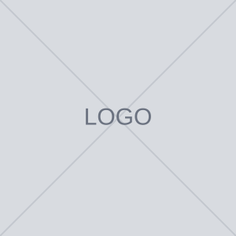

[HEADLINE: promessa em 1 linha]
[TEXTO: parágrafo de apoio · explique o como]
[SELO: selo curto]
[SELO: selo curto]
![[ALT: descrição da imagem]](assets/ph-4x3.svg)
[TEXTO: parágrafo de apoio]

[TEXTO: parágrafo de apoio · explique o como]
[TEXTO: parágrafo de apoio]